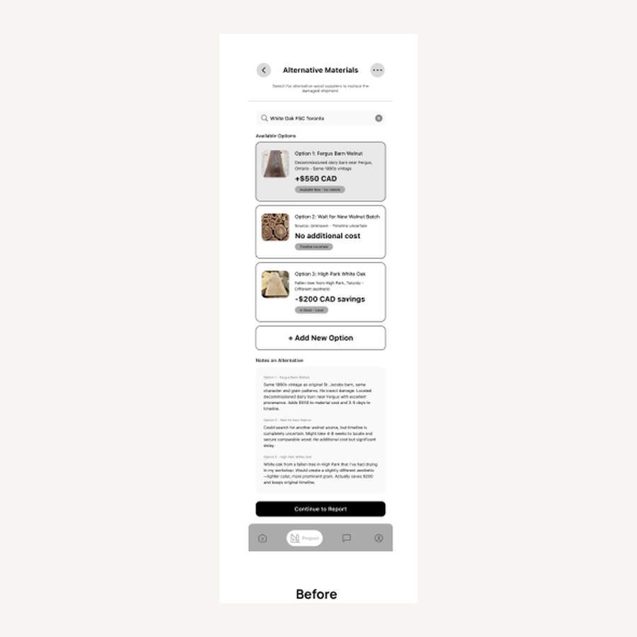
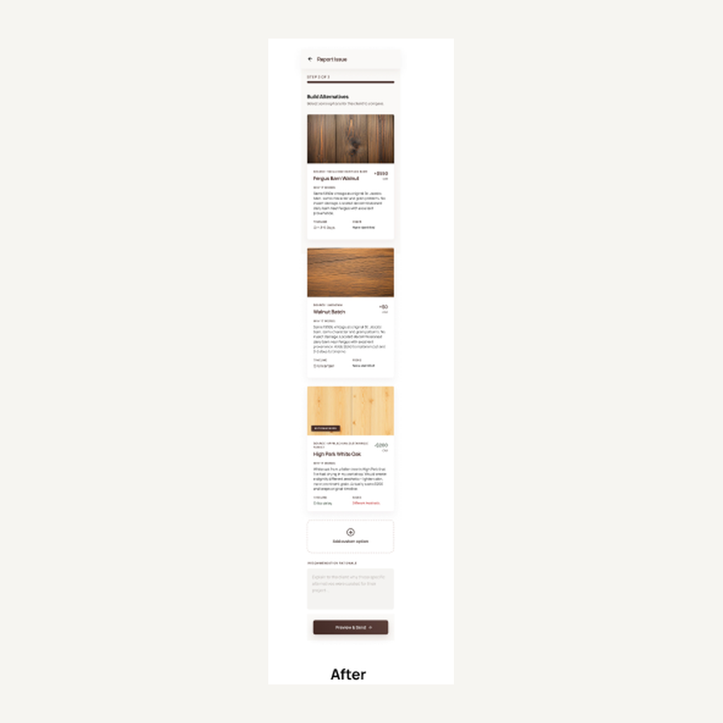
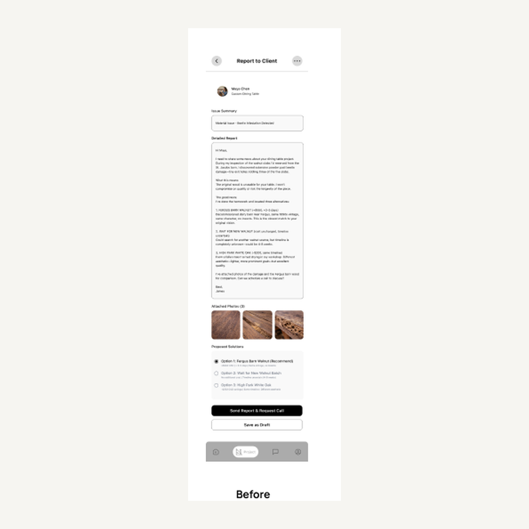
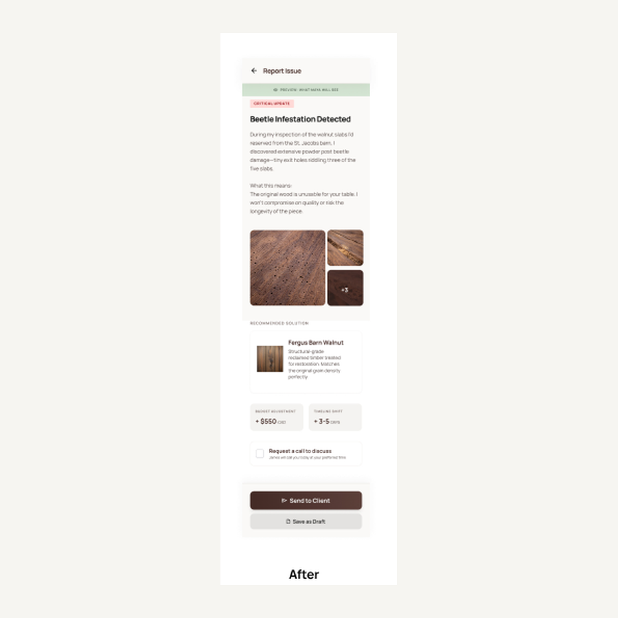
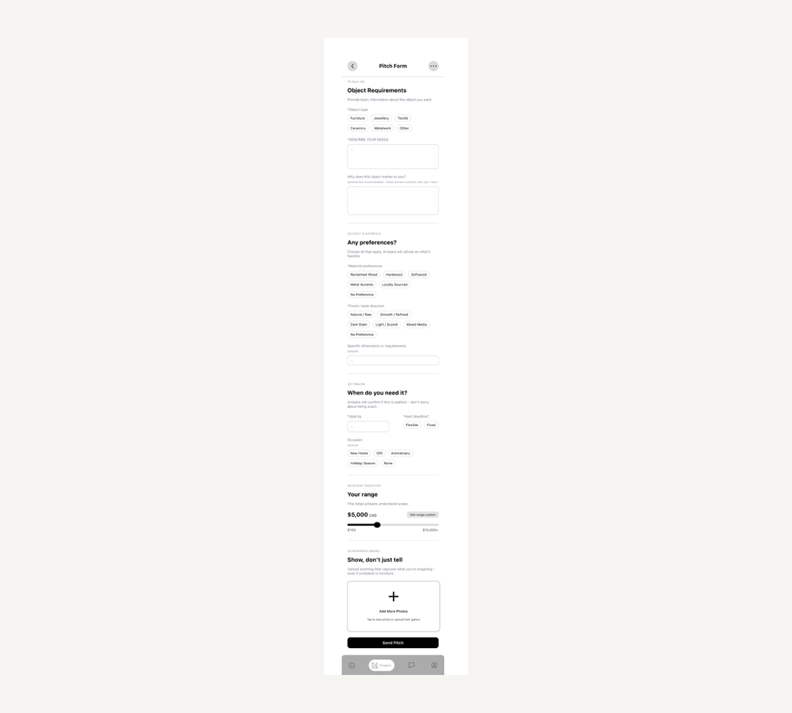
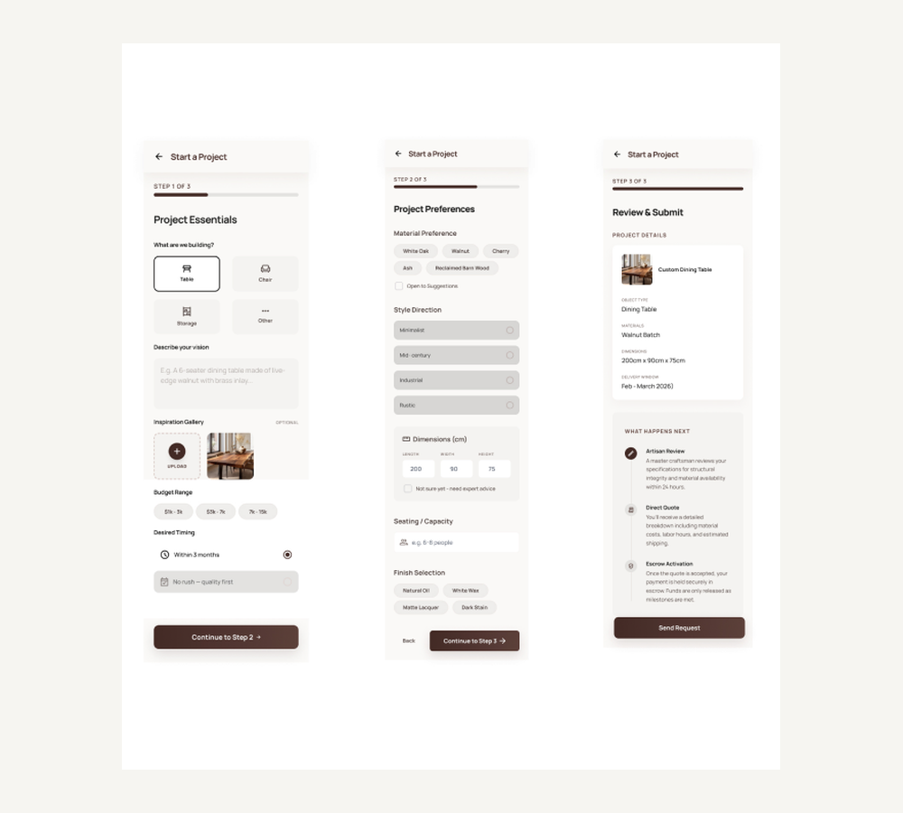

Client describes the piece
Preferences, references, timing, and budget arrive through a long, unstructured message.
Graduate UI Design · Academic Team Project
Designing and testing a traceable, dual-sided commission experience for high-stakes decisions between clients and artisans.
01 · The challenge
Custom furniture is not a simple checkout. Clients commit to a costly process they cannot fully see, while artisans explain material trade-offs, changing timelines, and approvals through scattered email or chat.
The design opportunity was not to make the process feel instant. It was to make expertise, trade-offs, and decisions visible.
Preferences, references, timing, and budget arrive through a long, unstructured message.
Photos, recommendations, alternatives, and trade-offs compete inside a message thread.
The final choice is separated from the evidence, cost, timeline, and project record it changes.
02 · Two-sided journey
I mapped the client journey first, then the artisan workflow behind it. The shared scenario was deliberately difficult: an artisan discovers beetle damage in walnut reserved for a client’s dining table.
The client needs a calm comparison and a confident approval path. The artisan needs to document evidence, frame alternatives, explain a recommendation, and show downstream cost and timing effects.
See evidence and a plain-language explanation before evaluating options.
Review source, risk, price, timing, and the artisan’s rationale in one model.
Turn the approved option into a traceable project update instead of another message thread.
01 Find an artisan and return to an active commission.
02 Review project essentials before sending the request.
03 Track work, decisions, and changes in one record.
01 See the project state and open the issue workflow.
02 Present alternatives using consistent criteria.
03 Carry approval into cost and timeline history.
Prototype walkthroughs
These high-fidelity walkthroughs show how the same commission moves through two different interfaces. Watch either role independently, or compare them to see how evidence, recommendations, approval, cost, and timing stay connected.
The client experience keeps evidence, alternatives, price, timing, and approval in one continuous journey.
The artisan experience turns a material complication into a structured recommendation and traceable project update.
03 · Usability evidence
I moderated six prototype sessions: three participants followed the client journey and three followed the artisan journey. All six completed the core tasks, with average completion times of 10–12 minutes for clients and 12–15 minutes for artisans.
Task completion showed that the structure worked. The observed hesitation showed where the interface still needed to explain responsibility, comparison, and consequence.
The test identified three issues that could materially affect a participant’s understanding or progress.
Four participants were unsure whether artisans selected a material or prepared options for client approval.
Three participants needed clearer context for where an alternative material came from.
Two participants in the artisan flow needed a clearer explanation of how an option affected the project.
Two participants in the client flow found the initial request too long and information-heavy.
Make it unmistakable that artisans prepare alternatives and clients approve one.
Connect recommendation rationale to cost, timing, and the project record.
Break the client request into understandable stages with a visible next step.
04 · Evidence to iteration
These are three independent improvements, not three chronological versions. The visual now isolates only the interface change; the evidence and design response stay readable beside it.


Evidence: P1 and P5 hesitated over whether the artisan should pick one material or prepare several.
Response: Consistent criteria, recommendation rationale, and a Preview & Send step make the artisan’s responsibility explicit.


Evidence: P4 wanted stronger reasoning and a clearer explanation of price and duration changes.
Response: The new flow links the material issue, photo evidence, recommended solution, budget adjustment, and timeline shift.


Evidence: P4 and P6 struggled with the amount of information and unclear sequence.
Response: Project essentials, preferences, and review become three visible stages with a clear next action.
05 · Visual direction
I explored three art directions before committing to the final interface: warm craft, precision workshop, and editorial provenance. This made visual style a product decision—how should the service communicate expertise, traceability, and human craft?
The chosen direction balances the warmth of custom making with the precision needed for evidence, comparison, and approval.
Outcome and next validation
I led a three-person team and maintained continuity across the client and artisan experience.
I connected usability findings to specific interface improvements instead of presenting research and UI as separate stories.
I designed the complete high-fidelity client and artisan interface after developing the artisan low-fidelity flow.
I translated craft, provenance, and decision clarity into one visual language for both sides of the service.
A focused follow-up round would test whether the revised selection model and shorter client request reduce hesitation before the system expands to more commission scenarios.